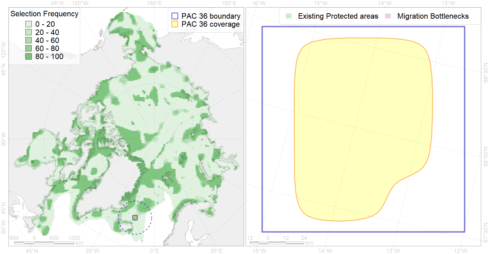

Region 36
Region 36
“ArcNet” scenario 33 achievement for region 36.
Use Accenter for advanced mode.

0
CFs inside of Region completely
1
CFs inside of Region at quarter
0
Complete-targets achievement by Region
1
Half-targets achievement by Region
| CF | Name | Target Achievement for Region | Proportion of Target Achievement in Region | Amount Proportion in Region |
|---|---|---|---|---|
| 7188 | VI.1.5. Fans | 90.5% | 83.0% | 56.0% |
| 5049 | Fin whale summer feeding areas in Jan Mayen | 4.5% | 4.5% | 3.0% |
| 4064 | Range of the Smooth polar sculpin (Cottunculus subspinosus) (F 52) | 36.4% | 7.6% | 2.8% |
| 5037 | Blue whale summer feeding areas in the Northeast Atlantic | 5.2% | 4.0% | 1.7% |
| 5098 | White-beaked dolphin feeding area in the Central North Atlantic | 9.1% | 3.0% | 1.4% |
| 5059 | Humpback whale summer feeding areas in the Eastern Greenland and Iceland | 8.9% | 3.0% | 1.3% |
| 7184 | VI.1. Greenland Sea and Fram Strait Basin rises VI.1.1. Plateaus | 4.4% | 1.7% | 0.7% |
| 4027 | Feeding/migration area of the Atlantic salmon (Salmo salar) American populations (F27) | 2.2% | 1.5% | 0.6% |
| 6002 | Little Auk (Alle alle alle) winetring grounds | 1.7% | 1.2% | 0.5% |
| 6076 | Common murre (Uria aalge aalge) wintering grounds | 2.2% | 1.2% | 0.5% |
| 6004 | Little Auk (Alle alle polaris) wintering grounds | 2.1% | 1.2% | 0.5% |
| 6023 | Atlantic puffin (Fratercula arctica naumanni) wintering grounds | 1.2% | 1.0% | 0.4% |
| 4032 | Range of the Arctic skate (Amblyraja hyperborea) (F2) | 8.8% | 0.7% | 0.3% |
| 4045 | Feeding/migration area of the Pink Salmon (Oncorhynchus gorbuscha), native distribution (F23) | 2.9% | 0.5% | 0.2% |
| 4059 | Range of the Greenland Halibut (Reinhardtius hippoglossoides) (F 49) | 5.8% | 0.5% | 0.2% |
| 6083 | Thick-billed murre (Uria lomvia lomvia) wintering grounds | 0.7% | 0.5% | 0.2% |
| 4003 | Range of the Atlantic Capelin (Mallotus villosus) (F10) | 5.2% | 0.4% | 0.2% |
| 4017 | Feeding/ migration area of the Greenland Shark (Somniosus microcephalus) (F1) | 0.7% | 0.4% | 0.2% |
| 4079 | Fish zoogeography, Arctic Region, Arctic Abyssal Province (11A -Scandian, 11B - Central-Arctic and 11C - Baffin Deep-sea Districts ) | 3.5% | 0.6% | 0.2% |
| 4037 | Distribution of the Glacial cod (Arctogadus glacialis) (F34) | 1.5% | 0.4% | 0.2% |
| 4096 | Range of the Glacial eelpout (Lycodes frigidus) | 1.0% | 0.3% | 0.1% |
| 4041 | Range of the Polar Cod (Boreogadus saida) (F35) | 0.4% | 0.2% | 0.1% |